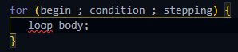
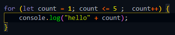
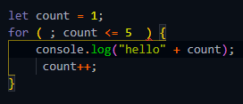

>>> for loop <<<
while loop ,, do while loop & for loop
এই টা loop এর মধ্যে কাজের ক্ষেত্রে সব থেকে বেশি ব্যেবহার হয় for loop ।
>>> Structure <<<

for loop এর বিশেষত্ব হল loop এর শুরুতেই
ভেরিএবল , condition , stepping এর কাজ এক সাথে এক first bracket এর মধ্যে হয়ে যায় ।
এখানে
begin = variable declare
condition = শর্ত
stepping = increment or decrement expression
সব কিছু বসিয়ে পুরনাঙ্গ for loop ।

>>> working process <<<
js যখন দেখে for তখনি js বুজতে পারে এটা for loop
তারপর js প্রথমে first bracket এর মধ্যে থাকা variable কে execute করে এই variable execute টা অন্য সব loop এর মত এখানেও একবারই হয়ে থাকে ।
তারপর js চলে যায় condition এর কাছে এটা চেক করতে যে condition ,, true না flase
তারপর js যদি condition ,, true পায় js সরাসরি loop body ,, run করে দেয় ।
এবং loop body , run করে তারপর চলে যায় আবার উপরেরে first bracket এ । এবং সেখানে গিয়ে সে stepping কে execute করে ।
stepping এ increment থাকলে 1 করে বারে decrement থাকলে 1 করে কমে ।
এভাবে js যতবার condition ,, true পাবে তত বারই iteration চলতে থাকবে ।
এক্ষেত্রে প্রতিটা iteration এ কিন্তু variable টা execute হবে না ,
variable ,, execute শুধু মাত্র 1 বারই হবে ।
আর পরবর্তী iteration এর সময় আগে condition তারপর true পেলে body রান করেই
stepping ,, expression টা execute করবে তারপর আবার condition ,, execute ।
এখানে চাইলে অন্য loop গুলর মত
stepping এর ক্ষেত্রে
increment (++) এবং decrement (--) জেটা প্রয়োজন সেটা ব্যেবহার করা যাবে ।
আর condition এর ক্ষেত্রে <= বা >= , < , > etc যেটা ইচ্ছা প্রয়োজনে ব্যেবহার করা যাবে ।
কখনো কখনো দেখা যায় যে
for loop এর condition এর মধ্যে
variable নেই এবং stepping expression নেই
তখন সেটা যেভাবে কাজ করে ।
ex:-

এখানে বাইরে declare করে রাখা variable ব্যাবহার করা হয়েছে ।
তো js যেভাবে বুজবে কোন variable টা এখানে ব্যেবহার করা হয়েছে সেটা হল
js যখন for loop এর condition টা পড়বে তখন সে begin এর জায়গায় কিছু পাবেনা শুধু একটা _ ; _ ছাড়া ।
এবং js তখন condition টা চেক করবে ,
condition এর variable টা যেহেতু আগে থেকেই declare করে আছে সেহেতু সে variable টার value র সাথে execute করে তারপর ture পেলে loop body রান করবে ।
তারপর loop body তে inline ,, stepping ব্যাবহার করা হয়েছে সেটাকে execute করে variable এর সাথে 1 যোগ করে , আবার condition টাকে execute করবে এভাবে iteration চলবে যতবার condition টা true হয় ।
তবে এক্ষেত্রে অবশ্যই
condition এর আগে একটা _ ; _ দিতে হবে ।
কারন এতে করে js বুজবে যে এখানে যে variable টা থাকার কথা সেটা এই loop এর বাইরে declare করা আছে ।